Ogni contributo verifica fonti primarie e indica cosa cambia per il destinatario. Mai marketing, mai pareri travestiti.
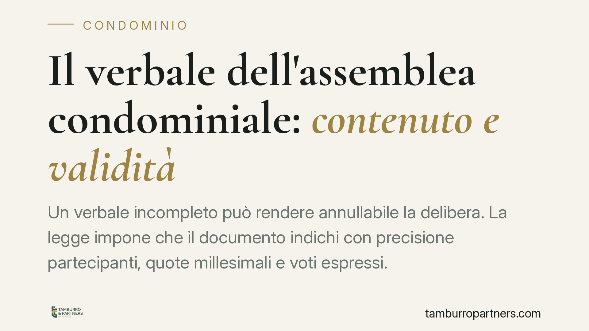
Un verbale incompleto può rendere annullabile la delibera. La legge impone che il documento indichi con precisione partecipanti, quote millesimali e voti espressi. La giurisprudenz…
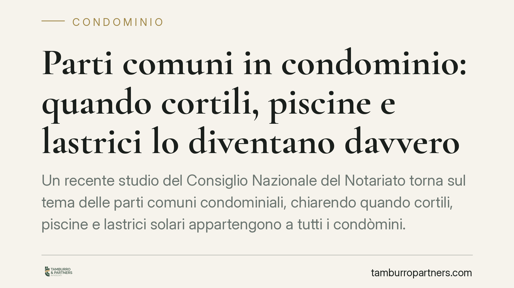
Un recente studio del Consiglio Nazionale del Notariato torna sul tema delle parti comuni condominiali, chiarendo quando cortili, piscine e lastrici solari appartengono a tutti i c…
Saltare una mensilità di affitto non comporta la perdita automatica della casa. La legge sulle locazioni fissa soglie precise e concede all'inquilino un ultimo rimedio: il termine …
Il verbale dell'assemblea condominiale non è una semplice formalità: deve dare conto di chi ha votato a favore, contro o si è astenuto. Quando manca l'indicazione nominativa dei vo…
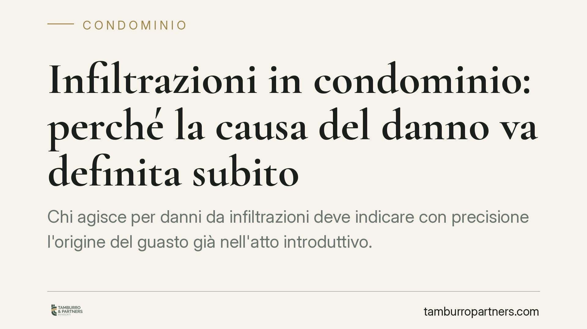
Chi agisce per danni da infiltrazioni deve indicare con precisione l'origine del guasto già nell'atto introduttivo. Una recente pronuncia della Cassazione ribadisce che modificare …
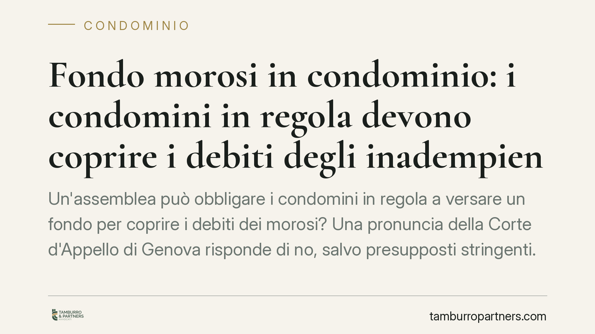
Un'assemblea può obbligare i condomini in regola a versare un fondo per coprire i debiti dei morosi? Una pronuncia della Corte d'Appello di Genova risponde di no, salvo presupposti…
Molti immobili presentano piccole difformità edilizie: una finestra spostata, un tramezzo non censito, una veranda mai dichiarata. La legge distingue nettamente tra l'assenza dei r…
Un semplice click su una casella non equivale a firma. La giurisprudenza distingue tra la validità del contratto concluso online, ammessa, e l'efficacia delle clausole vessatorie, …
Circolano indicazioni su presunte nuove soglie per il versamento del TFR all'INPS a partire dal 2026. In assenza di un testo normativo ufficiale che confermi tali novità, ricostrui…
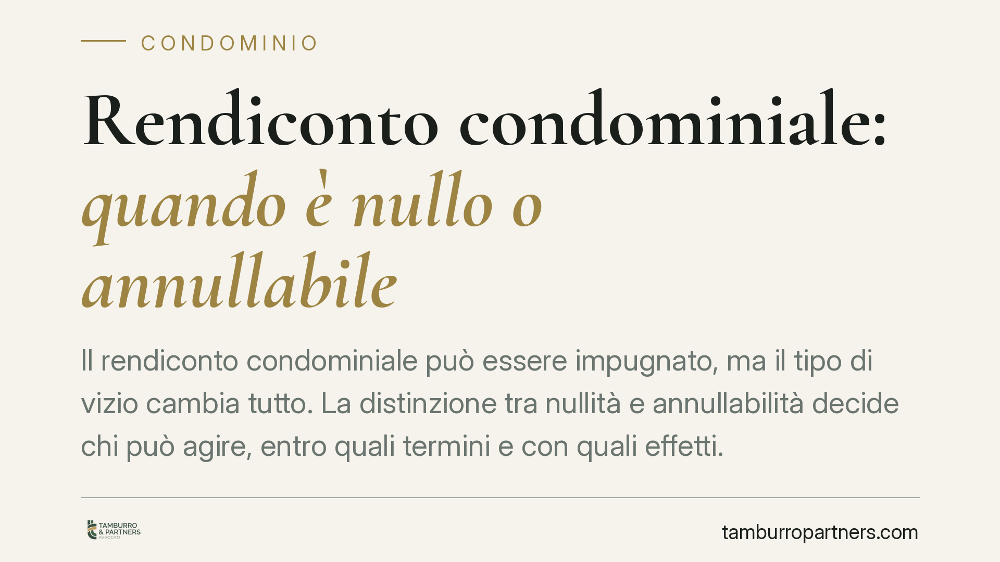
Il rendiconto condominiale può essere impugnato, ma il tipo di vizio cambia tutto. La distinzione tra nullità e annullabilità decide chi può agire, entro quali termini e con quali …
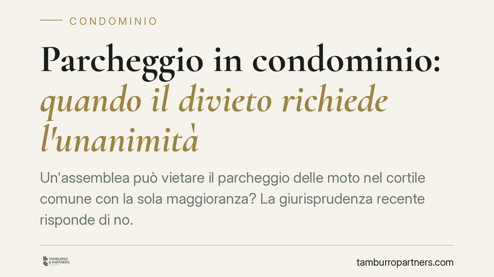
Un'assemblea può vietare il parcheggio delle moto nel cortile comune con la sola maggioranza? La giurisprudenza recente risponde di no. Quando la delibera incide sul godimento indi…
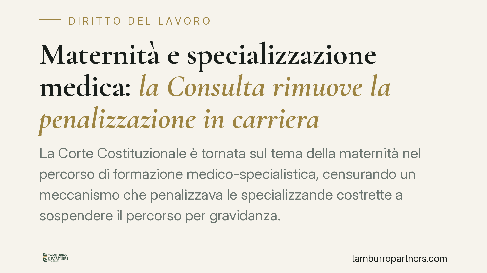
La Corte Costituzionale è tornata sul tema della maternità nel percorso di formazione medico-specialistica, censurando un meccanismo che penalizzava le specializzande costrette a s…
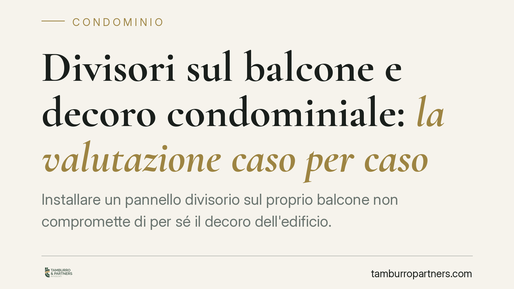
Installare un pannello divisorio sul proprio balcone non compromette in modo automatico il decoro architettonico dell'edificio. Una recente pronuncia del Tribunale di Savona ribadi…
Le ferie non godute non sono solo una questione organizzativa: hanno riflessi contributivi precisi. Il datore che le lascia maturare senza fruizione può trovarsi a versare contribu…
Chi supera un concorso pubblico e accetta l'assunzione a tempo indeterminato rischia di perdere la posizione utile in graduatoria per successive chiamate. Un orientamento della giu…
Un licenziamento disciplinare intimato senza previa contestazione dell'addebito è privo del suo presupposto. Il Tribunale di Napoli, con una recente pronuncia, ne ha tratto consegu…
Chi si dimette di solito perde la disoccupazione. Ma esiste un'eccezione rilevante: le dimissioni per giusta causa. Quando il datore rende impossibile proseguire il rapporto, il la…
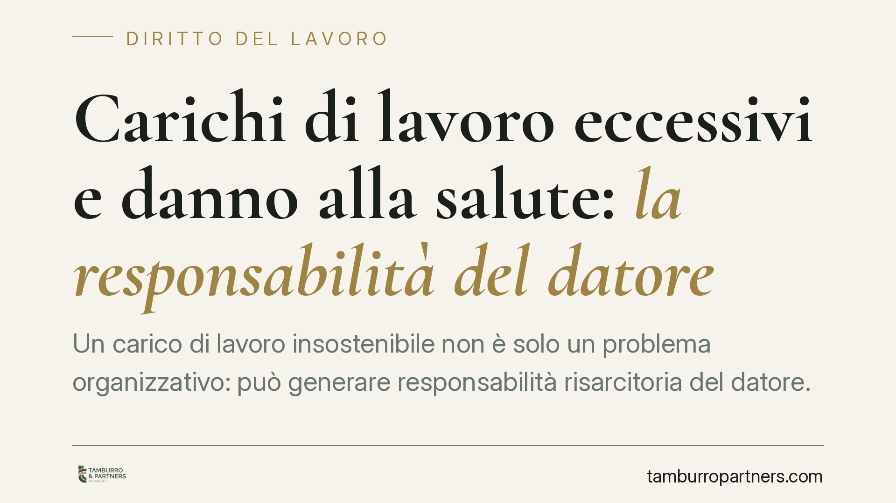
Un carico di lavoro insostenibile non è solo un problema organizzativo: può generare responsabilità risarcitoria del datore. La Cassazione, in linea con un orientamento consolidato…
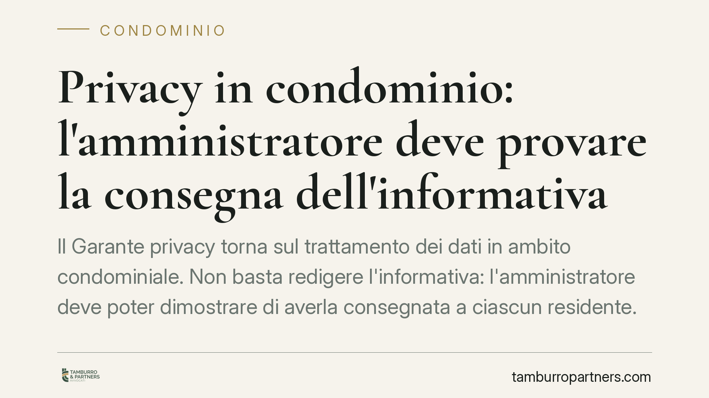
Il Garante privacy torna sul trattamento dei dati in ambito condominiale. Non basta redigere l'informativa: l'amministratore deve poter dimostrare di averla consegnata a ciascun re…
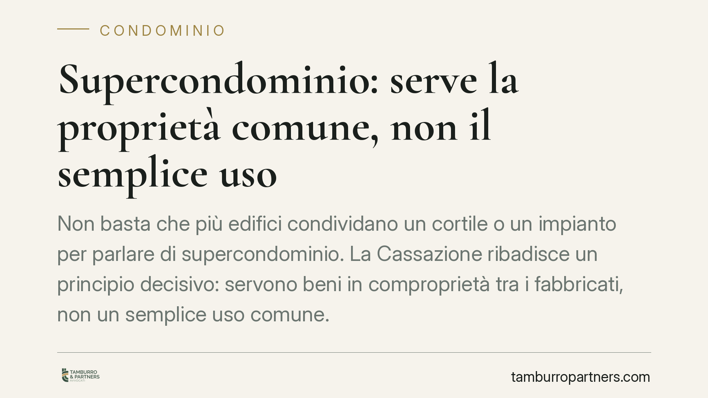
Non basta che più edifici condividano un cortile o un impianto per parlare di supercondominio. La Cassazione ribadisce un principio decisivo: servono beni in comproprietà tra i fab…
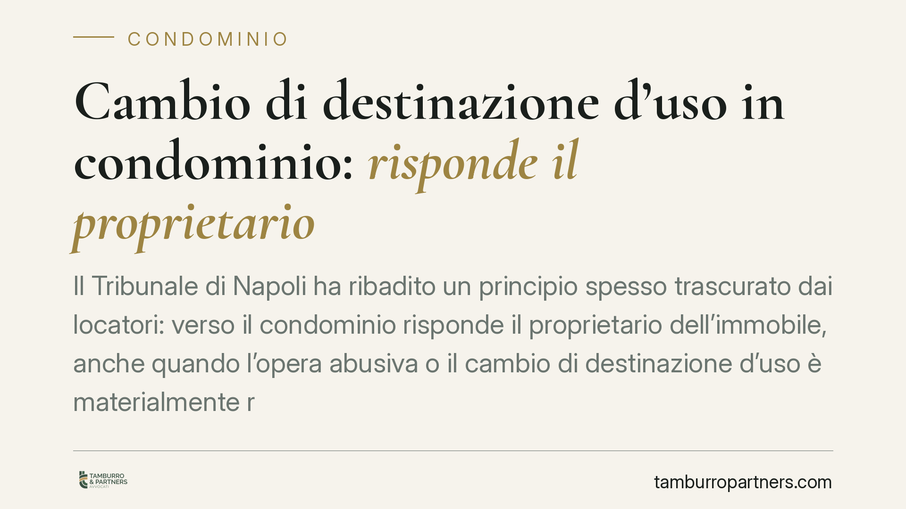
Il Tribunale di Napoli ha ribadito un principio spesso trascurato dai locatori: verso il condominio risponde il proprietario dell'immobile, anche quando l'opera abusiva o il cambio…
Anche il dirigente ha diritto al pagamento delle ferie non godute quando il datore di lavoro non ha reso possibile il riposo. Il principio, ancorato alla tutela della salute psicof…
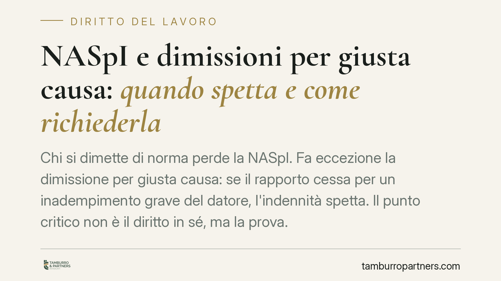
Chi si dimette di norma perde la NASpI. Fa eccezione la dimissione per giusta causa: se il rapporto cessa per un inadempimento grave del datore, l'indennità spetta. Il punto critic…
Nella contrattualistica digitale torna centrale un interrogativo: la spunta o il click su un modulo web bastano ad approvare in modo specifico le clausole vessatorie ex art. 1341, …
La formazione sulla sicurezza deve precedere l'ingresso in azienda: il lavoratore va formato prima di iniziare l'attività, non dopo. Per i settori stagionali si discute una deroga …
Il nuovo Piano Nazionale per l'assistenza agli anziani non autosufficienti conferma l'assetto esistente senza introdurre le riforme strutturali previste dalla Legge 33/2023. Il Pat…
Al termine del periodo formativo, il contratto di apprendistato non si estingue da solo: prosegue come rapporto a tempo indeterminato salvo che una delle parti receda. Capire chi d…
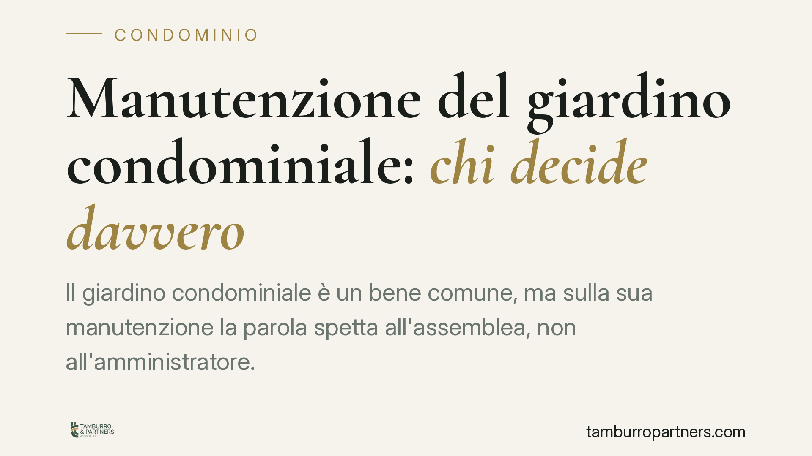
Il giardino condominiale è un bene comune, ma sulla sua manutenzione la parola spetta all'assemblea, non all'amministratore. Chi agisce di propria iniziativa espone sé stesso e il …
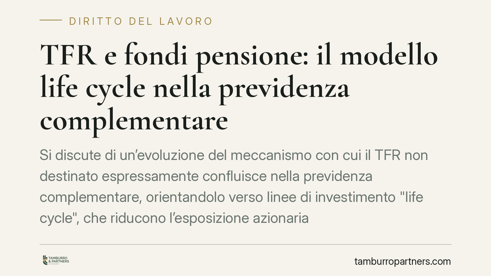
Si discute di un'evoluzione del meccanismo con cui il TFR non destinato espressamente confluisce nella previdenza complementare, orientandolo verso linee di investimento "life cycl…
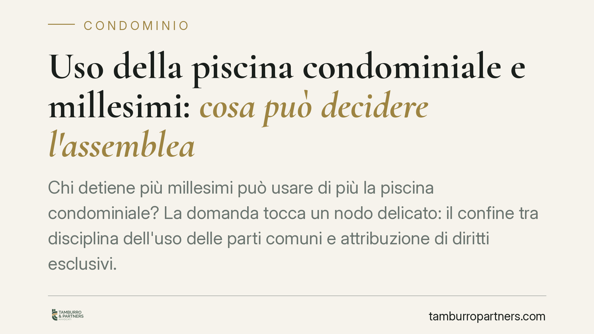
Chi detiene più millesimi può usare di più la piscina condominiale? La domanda tocca un nodo delicato: il confine tra disciplina dell'uso delle parti comuni e attribuzione di dirit…